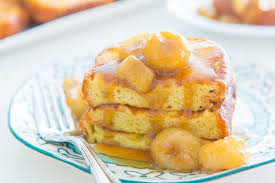

Bananas Foster French Toast

Ingredients
For the French Toast
- 10 Slices of thick cut bread
- 1-2 cups of whipping cream
- 2 eggs beaten
- 1/2 tbsp of ground cinnamon
- 1/2 tbsp of vanilla extract
- 2 tbsp of sugar
- 1 pinch of salt
For the Bananas Foster
- 1/2 cup of butter
- 1/2cupof brown sugar
- 1/4 cup of whipping cream
- 1 tsp ground cinnamon
- 1 tsp vanilla extract
- 2 bananas cut into round slices
Instructions
French Toast
- Combine all of the ingredients except for the bread, and mix in a bowl
- Submerge each slice of bread in the mix, and turn it over to make sure the other side is covered well.
- Melt some butter in a frying pan over medium heat and cook the toast, one side at a time until slightly browned. Then set aside.
Bananas Foster
- Melt the butter in a saucepan over medium heat.
- Add the sugar and stir well.
- Let simmer for about one minute
- Add the rest of the ingredients, stir well, and continue cooking over medium-low heat for about 3 additional minutes.
- Serve immediatrly over the French Toast with whipped cream and powdered sugar if desired.